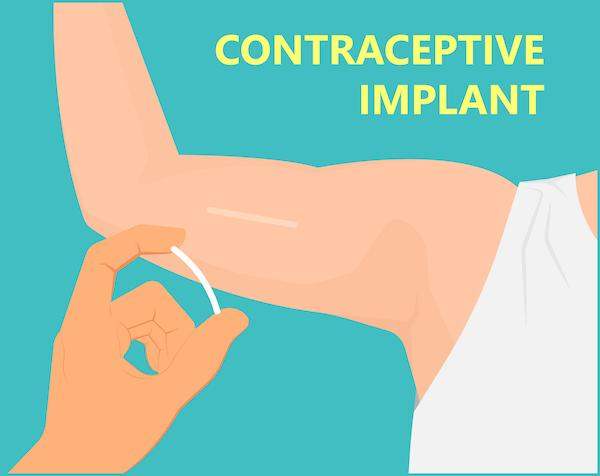
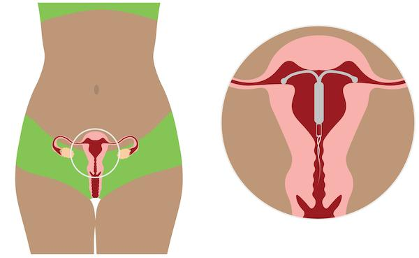

Time-release birth control methods are long-acting, reversible methods that slowly release hormones into your body over time to prevent pregnancy. With these methods, you do not need to remember to take a pill every day.
These methods are very effective. They can last from weeks to years, depending on the type. All time-release birth control methods require either in-person visits to your care team or a prescription.
Time-release birth control may be helpful if you:
Want a birth control method you do not have to remember every day
Have trouble taking pills on time
Want long-term pregnancy prevention
Want fewer or lighter periods
Want a method you can stop at any time if you want to become pregnant
These methods can also reduce cramps, acne, and the risk of some cancers. Many people like the ease and privacy.
Time-release birth control methods affect different parts of your body, including:
Ovaries: Which store eggs and make hormones
Uterus: Where a baby would grow
Cervix: The opening to the uterus
Different methods work in different ways. They may:
Stop ovulation: No egg is released.
Thicken cervical mucus: This blocks sperm.
Thin the lining of the uterus: This way, an egg cannot attach.

What it is: A tiny, flexible rod placed under the skin of your upper arm
How it is given: Inserted by your care team in the clinic, through a needle with numbing medicine
How long it lasts: Up to 3 years
Effectiveness: Over 99%
Common side effects: Irregular bleeding, lighter periods, mood changes
Periods: May stop or become irregular

What it is: A small, T-shaped device placed in the uterus through the cervix
How it is given: Placed by your care team in the clinic
How long it lasts: 3 to 8 years
Effectiveness: Over 99%
Common side effects: Cramping at placement, lighter or no periods over time
Periods: Often get lighter or go away

What it is: A shot given every 3 months
How it is given: In the arm or hip at your clinic
How long it lasts: 3 months per shot
Effectiveness: About 94% with typical use
Common side effects: Weight gain, headaches, irregular bleeding
Periods: May stop after a year
What it is: A soft, flexible ring you place in your vagina
How it is used: Put in for 3 weeks, take out for 1 week
How long it lasts: Replace yearly or monthly, depending on the brand
Effectiveness: About 91% with typical use
Common side effects: Discharge, headaches, mood changes
Periods: May become more regular
What it is: A small sticker worn on the skin that releases hormones
How it is used: Changed weekly for 3 weeks, then no patch for 1 week
How long it lasts: Must be replaced weekly
Effectiveness: About 91% with typical use
Common side effects: Skin irritation, headache, nausea, breast tenderness
Periods: May become lighter and more regular
STIs are sexually transmitted infections. These include chlamydia, gonorrhea, herpes, and HIV.
Only condoms help protect against most STIs.
Other types of birth control do not protect you from STIs.
To lower your risk, use a condom every time you have sex.
Which time-release method is best for my health and lifestyle?
How soon does it start working?
What if I want to get pregnant later?
Are there side effects or health risks?
Contact your care team with any questions or concerns. They will help you feel confident about your choice.
Thank you for trusting us with your care. We are here to support you and want you to feel your best. Contact us with any questions.
IF YOU HAVE A MEDICAL EMERGENCY, CALL 911 OR GO TO THE EMERGENCY ROOM.
The information presented is intended for general information and educational purposes. It is not intended to replace the advice of your health care provider. Contact your health care provider if you believe you have a health problem.
Last updated May 2025
© 2025 Mytonomy, Inc. All rights reserved.